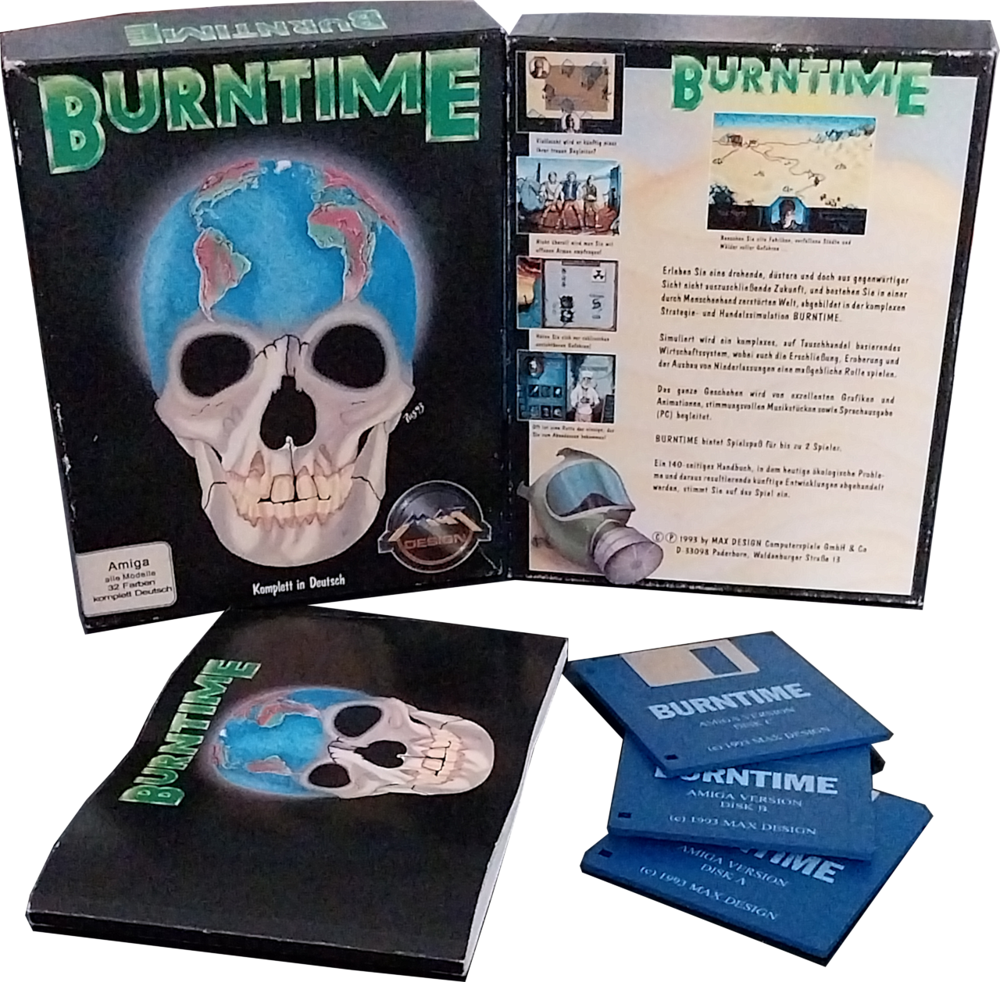

Entwickler: Max Design
Publisher: Max Design / Magic Bytes
Genre: Endzeit-Strategie / Rollenspiel
Plattform: Amiga, DOS
Erscheinungsjahr: 1993
Nach einem Atomkrieg kämpfen verschiedene Fraktionen um Nahrung, Wasser und Einfluss. Mit einer kleinen Gruppe Überlebender erkundest du die zerstörte Welt, handelst mit Ressourcen und behauptest dich gegen rivalisierende Banden.
9/10 – Eine einzigartige Mischung aus Strategie, Rollenspiel und Survival mit unverwechselbarer Atmosphäre.


Burntime überzeugt bis heute durch seine ungewöhnliche Spielmechanik, die dichte Atmosphäre und den gelungenen Mix aus Strategie und Rollenspiel.